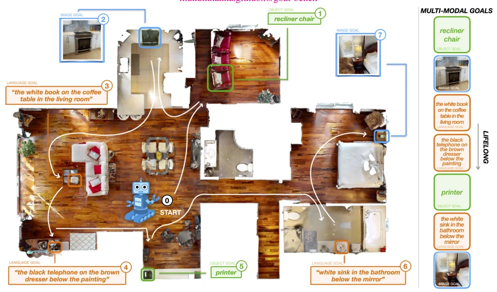
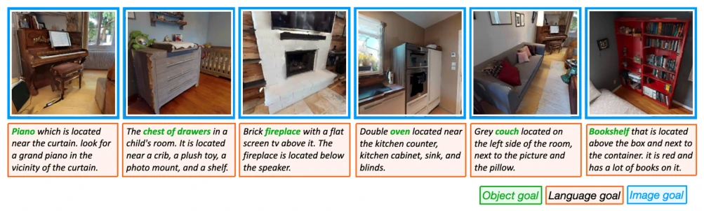
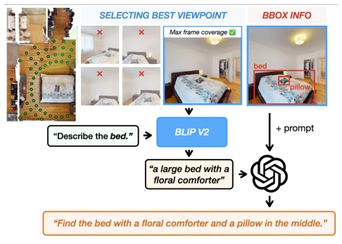
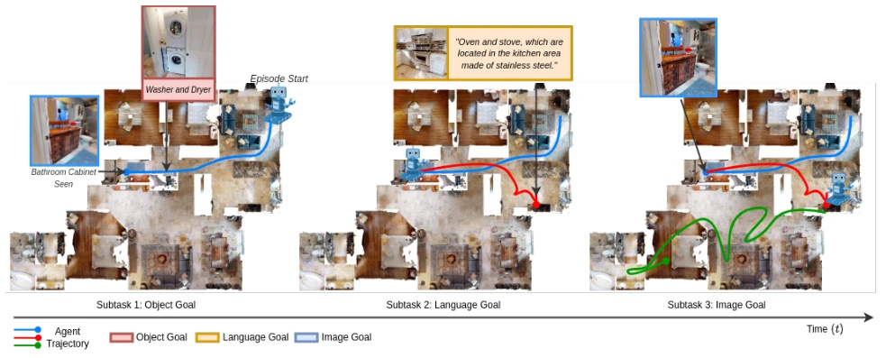
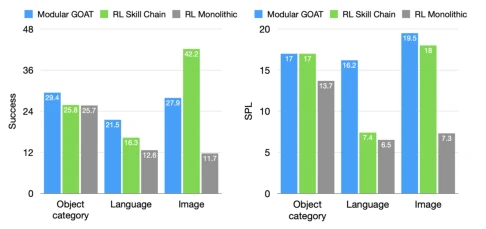
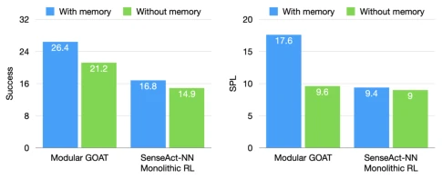
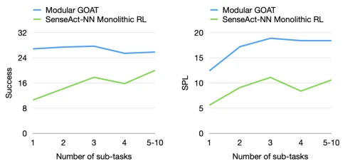
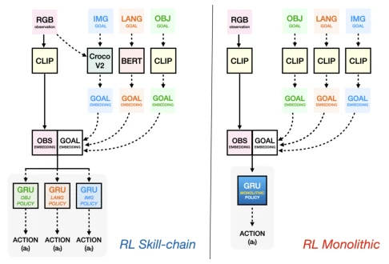
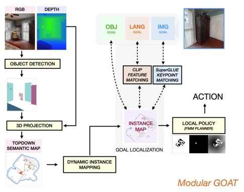

This paper adds another 'fire' to the embodied navigation community; GOAT-Bench attempts to unify multimodal (category, language, image) and lifelong navigation tasks. To be frank, previous navigation benchmarks are either too simplistic (recognizing only object categories) or too short-sighted (resetting the scene after each task), falling far short of real-world home robots. The authors created an open-vocabulary dataset with 680,000 entries, which is quite generous. However, the results are somewhat 'lean': End-to-end reinforcement learning (SenseAct-NN) achieves a higher success rate but takes a winding path (low SPL); the modular method is clever (has a map) but relies on the accuracy of the perception module. Most painfully, CLIP features remain weak on instance-level navigation, and RNN hidden states failed to truly 'remember' the environment. This benchmark indeed reveals who is 'swimming naked', but it is still far from general navigation; after all, enabling a robot to 'live' in the same house and remember where it found things previously is much harder than recognizing a cup.
Existing navigation research is mostly limited to single-modality targets, such as PointNav [6], ObjectNav [13], or ImageNav [18], making it difficult to meet the needs of real users with mixed instructions. For instance, a user may want to see the 'white book on the coffee table' (language) or directly provide an image (image); single-modality encoders cannot be generalized [35]. Furthermore, most benchmarks adopt episodic settings where the scene is reset after task completion [13, 24], ignoring the robot's need to leverage historical experience when operating long-term in the same environment. Although foundation models like CLIP are used for multimodal alignment [25], they perform poorly on specific instance localization and spatial details [41]. GOAT-Bench aims to fill this gap, evaluating the agent's comprehensive capabilities under open-vocabulary, multimodal targets, and lifelong scenarios, promoting the development of general navigation agents.

Figure 1. We study the Go to Any Thing (GOAT) task, which involves agents navigating to a sequence of open vocabulary goals specified through any of the three modalities – category name, a language description, or an image. We propose GOAT-Bench, a benchmark for the GOAT task, where we evaluate modular and monolithic, explicit and implicit map-based navigation approaches. In the above example, we task the agent with sequentially navigating to 1) a recliner chair (from a closed set of k categories), 2) the oven shown in the picture, 3) “the white book on the coffee table in the living room”, and some other objects in the scene. The goal of the benchmark is to facilitate progress towards building such universal, multi-modal, lifelong agents.
The overall framework is based on the Habitat simulator to construct the GOAT-Bench dataset. First, utilizing semantic annotations from HM3DSem [22], open-vocabulary targets are generated through an automated process: object categories (OVON), instance images (OVIIN), and language descriptions (LanguageNav). Language description generation utilizes BLIP-2 to extract attributes, followed by ChatGPT-3.5 generating descriptions combined with spatial information, referencing related work on LanguageNav [3]. Baseline methods are divided into two categories: 1) Modular method (Modular GOAT [42]): constructs explicit semantic and instance maps, locating targets through keypoint matching or CLIP features, combined with exploration strategies and local navigation strategies. 2) End-to-end neural network (SenseAct-NN): includes Skill Chain (task-specific strategy chain) and Monolithic Policy (single policy). Monolithic attempts to pass information across sub-tasks via RNN hidden states as implicit memory, using CLIP to encode multimodal targets. In terms of data flow, the Agent receives RGB, depth, GPS, and target instructions, outputting actions.

Figure 2. Preview of the GOAT-Bench dataset. We show multi-modal examples of goal instances from the dataset: images of objects (blue), language descriptions (orange) and object category annotations (green).

Figure 3. LanguageNav dataset generation pipeline. We automat- ically generate language descriptions for object goals by leveraging VLMs, LLMs and ground truth information from simulator. We first capture an image of the goal object from a valid viewpoint. Next, we retrieve spatial and semantic information of the nearby objects from the simulator. We then prompt BLIP-2 [47] to extract appearance attributes of the object. These are then combined to prompt ChatGPT-3.5 to output a language description of the goal.

Figure 9. Qualitative example of the monolithic RL baseline agent not remembering objects or regions already seen in the environment. The agent starts by navigating to a washer dryer and sees the bathroom cabinet on its way. However, when tasked with navigating to the same bathroom cabinet in the third sub-task of this GOAT episode, the agent does not go back to the seen region of the house, but instead keeps exploring new regions.Figure 11. Additional multi-modal examples from the GOAT dataset.
Evaluation is conducted using SR and SPL. Testing is performed on 3 validation sets (Seen, Synonyms, Unseen). Results show that SenseAct-NN Skill Chain has the highest success rate (approximately 29%), but the lowest SPL (12.8), due to a lack of cross-sub-task memory. The modular method has a higher SPL (17.5+), relying on explicit maps. Monolithic RL performs the worst, with implicit memory being ineffective. Ablation studies indicate that removing memory causes the modular method's SPL to drop by approximately 2 times, proving memory is crucial for efficiency. Modality analysis shows that CLIP performs weaker than CroCo-v2 [34] on language and image targets. In noise testing, Skill Chain is robust to image noise, but the modular method is sensitive to object category synonym replacement.

Figure 4. Performance across types of modalities. We breakdown the performance of all 3 baselines by modalities used subtask type: object category, language or image. of CLIP embeddings for capturing instance-specific features. For image goals, we see that the CroCo-v2 Instance Ima- geNav policy used in the SenseAct-NN Skill Chain baseline outperforms Modular GOAT on success rate – by a huge margin of about 15%. On SPL, however, Modular GOAT does better because of its persistent memory. The SenseAct- NN Monolithic baseline, on the other hand, significantly underperforms on both success and SPL. As shown in Fig. 4, the ranks of the baselines using average performance is not indicative of performance across each modality. This is be- cause, task-specific policies trained for SenseAct-NN Skil

Figure 5. Usefulness of memory: We benchmark the drop in performance for when no memory is maintained across subtasks for modular GOAT [42] and SenseAct-NN Monolithic RL baselines.

Figure 6. Average performance over time in a GOAT episode. We plot the success rate and SPL of memory based baselines against the number of subtasks completed in a GOAT episode. the scene when asked to navigate to an object it has seen previously (see Appendix D for qualitative visualizations).

Figure 8. Model architecture for SenseAct-NN Baselines: We evaluate two types of SenseAct-NN RL policies: Skill Chain (left) and a Monolithic Policy architecture (right). Depending on the cur- rent goal specification (object category, language, or image), both methods first concatenate the goal +and current visual observation embeddings. The skill chain baseline then uses a policy pre-trained on the task corresponding to the current goal specification (e.g. ObjectNav policy for an object category goal). Once the current goal is reached, the hidden state is dropped and the agent switches to using a different policy depending on the subsequent goal. The monolithic policy, on the other hand, uses the same policy for all three types of goal specifications to predict the next action (while main

Figure 10. Modular GOAT Baseline Architecture: This baseline [42] maintains a semantic and instance-specific topdown map of the environment using a perception module combined with ground truth pose and depth information. This is then used to localize object, language, and image goals – by matching CLIP features or image keypoints. The agent explores the scene using frontier- exploration until a match is found. The goal is then passed to a local policy which predicts low-level actions to reach the goal.